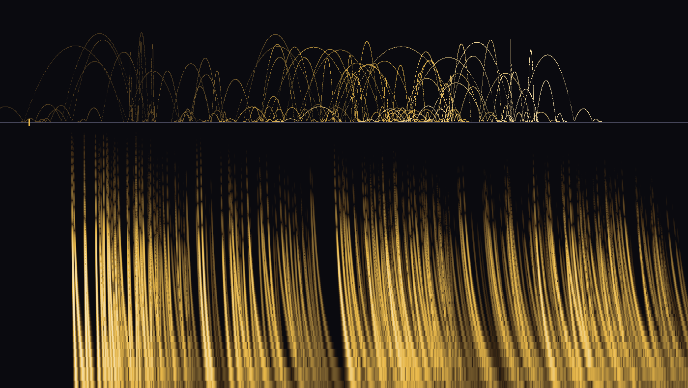

What if every grain in a granular synth were a real particle — thrown, falling, bouncing — and the sound came from the physics of where it landed rather than from knobs? Let's walk the arc of this project in six moves, then play with the thing it has become.
A granular synth chops sound into tiny grains and scatters them. Usually each grain is a scheduled event with a pitch, a length and an envelope, all set by parameters. Particle Synthesis asks the grain to be a thing instead: a particle with position, velocity and mass, moved by the same kind of physics a game engine uses for sparks and rain.
The test the project set itself is strict. It should sound like physics, not parameter modulation — the kind of sound your ear files under "something happened in a real place," not "an LFO is sweeping a filter."
Strike a frozen lake with a stone and you hear a descending pew. Bending waves in a stiff plate travel at a speed that depends on their frequency: high frequencies outrun low ones. A strike contains every frequency at once, so by the time it reaches you it has been sorted into a sweep, highs first. That sorting is dispersion, and it is the whole sound.
That last line is the one to keep. It says a strike heard from farther away sweeps more slowly: double the distance and the chirp takes twice as long. Try it.
Now the particles. An emitter throws them upward; gravity and a little air drag bring them down; they skip across the plate, losing a bit more than half their bounce each time. Every strike is heard through the law above, at both pickups. Walk the fountain away from the pickups and listen to the chirps stretch. Switch the ice off and the same strikes become plain clicks — that difference is what dispersion adds.
The same model rendered exactly in Python, frequency by frequency, with the fountain walking from 3 m to 18 m away over ten seconds. The browser above uses a closed-form shortcut for the chirp; checked against the exact render on twenty strikes it matches with a correlation of 0.997 or better, so what you play here is the same sound, just computed differently.

Each file is peak-normalised on its own. Dispersion only moves energy in time, never adds or removes it, so the dry and iced clouds carry the same energy — the clicks just spend it all in an instant, which is why 01 sounds thinner at the same peak.
This is how the particle's physics becomes sound, with nothing assigned by hand:
| particle | physics | what you hear |
|---|---|---|
| where it lands | distance r to each pickup | how slowly the chirp sweeps |
| how fast it hits | impulse, mass × speed | how loud the strike is |
| how heavy it is | contact time, longer for heavy | how dark the strike is |
| how it bounces | each hop about half the last | the skip-skip-skip rhythm |
Let particles collide with each other, not just the plate. Two grains touching becomes a strike at a moving place — the page's third forward direction, and the first thing the fountain can't already do.
The closed form means no FFT per grain: each strike is one oscillator whose pitch follows r² ⁄ (4Ct²). That is a per-sample voice Gen~ can run, with the particle carrying its own state — the page's first forward direction.
A thousand particles stepping physics, each strike a voice summed into one signal — the parallel shape the page has pointed at from the start. The Python render took about 34 seconds of CPU for 12 seconds of the 1000-particle cloud; that is the number to beat.